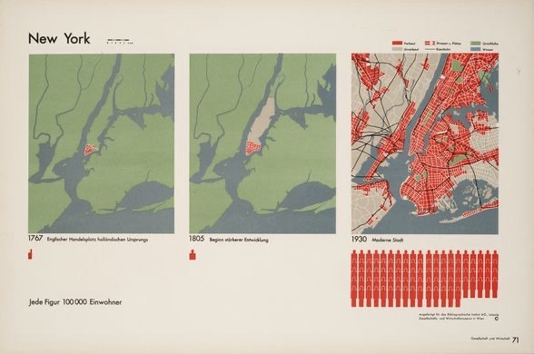
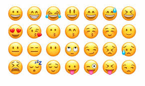

El diseño como puente hacia la alfabetización visual
El contexto de la pieza reside en la alfabetización visual de la sociedad a través de la síntesis de datos. El problema principal que resuelve es la desconexión entre la estadística técnica y la comprensión del ciudadano común, buscando transformar cifras abstractas en un lenguaje universal y directo.
La visualización articula con claridad el quién (la masa poblacional), el qué (el fenómeno de expansión urbana), el dónde (la ciudad de Nueva York) y el cuándo (una evolución histórica desde el siglo XVII hasta 1930). En su esencia, la obra utiliza el diseño como una herramienta de claridad funcional y pedagogía social , eliminando el adorno innecesario para que el conocimiento sobre el crecimiento de la ciudad sea accesible y fácil de comparar para cualquier persona.

El retrato del acelerado crecimiento de Nueva York, que transitó de 25,000 a 9.5 millones de habitantes en un siglo y medio, constituye un caso de estudio ideal para cuestionar los cimientos de la jerarquía DIKW (Datos, Información, Conocimiento, Sabiduría).
En una primera capa de análisis, observamos la transformación de datos en utilidad funcional: el gráfico convierte símbolos de observación de censos y edificios en información procesada que responde a preguntas de "cuánto", como quién o dónde. Este proceso reduce la carga cognitiva para una comprensión instantánea, alineándose con la idea de que la información es dato procesado para responder a una indagación. Sin embargo, aquí emerge la falacia de la neutralidad estadística. Los datos no son cimientos puros, sino que están "cargados de teoría". Existen decisiones interpretativas previas sobre qué medir, donde en esta pieza la escala física se impone como la única métrica de desarrollo válida.
Al profundizar, la cuantificación aparece como una construcción de poder. Los sistemas de clasificación son estructuras conceptuales humanas que eligen qué sujetos u objetos contar, validando narrativas de hegemonía occidental. Esto revela la insuficiencia del modelo DIKW lineal; la progresión tradicional que asciende desde los datos hasta la sabiduría simplifica en exceso el conocimiento. Al ignorar sesgos culturales y dinámicas sociopolíticas, el modelo omite que el conocimiento es un proceso social, contextual y culturalmente ligado. Existe una tensión crítica entre la destilación y el contexto: el diseño busca purificar la información para hacerla "universal", una herencia de la era del papel que intenta filtrar el "ruido". No obstante, este filtrado elimina el contexto social y político esencial para una comprensión profunda, ignorando que el conocimiento es a menudo más creativo, desordenado y difícil de alcanzar de lo que sugiere una pirámide.
Tras este análisis, concluimos que en la obra de Neurath coexisten dos fuerzas latentes. En la superficie, predomina el dato útil como una herramienta magistral de comunicación funcional que informa de manera democrática y rápida. Mientras tanto, en el fondo, subyace la construcción social de poder. El gráfico no funciona como una ventana transparente a la realidad, sino como un espejo de los valores modernistas de su época, donde la cuantificación sirve para ratificar una jerarquía de desarrollo global. Como bien se ha planteado, la sabiduría es el punto donde los humanos inyectan ética o moral en los sistemas, una función que no puede asignarse simplemente a la automatización del dato.
¿Qué tipo de información predomina?
Tras este análisis, podemos concluir que en la obra de Neurath coexisten dos fuerzas: En la superficie, predomina el dato útil. Es una herramienta magistral de comunicación funcional que cumple con la promesa de informar de manera democrática y rápida. Mientras que en el fondo, subyace la construcción social de poder. El gráfico no es una ventana transparente a la realidad, sino un espejo de los valores modernistas de su época, donde la cuantificación sirve para ratificar una jerarquía de desarrollo global.
Como diseñadores y analistas, nuestra tarea es reconocer que toda visualización es una intervención en el mundo, y que incluso el pictograma más simple lleva consigo el peso de una decisión política.
Al llevar a cabo este tipo de modelo para que sea útil, es necesario utilizar datos sensibles, lo que sería la información personal de los grupos específicos de interés. La información que pudo haber estado involucrada en la recolección de datos son: Los datos censales, como el número de identificación, nombre y nivel de educación. La ubicación, dirección del domicilio y lugar de trabajo o estudios. El orígen, la raza o etnia de las personas por los temas de migración, entre otros datos. Por lo tanto si en algún caso este tipo de información es divulgada, podría conllevar a cargos por la vulneración a la privacidad.
El legado de Otto Neurath y Gerd Arntz es, literalmente, el aire que respiramos en el diseño gráfico actual. Si hoy puedes navegar por un aeropuerto en un país cuyo idioma no hablas, es gracias al ISOTYPE.
Aquí te detallamos cómo ese modo de visualizar se manifiesta en el mundo contemporáneo:
*La Interfaz de Usuario (UI) y los Emojis?*

Los iconos que usamos para “ajustes”, “borrar" o "perfil" son descendientes directos de los pictogramas de Arntz. Buscan lo mismo: universalidad y economía visual.
Los emojis son el cumplimiento del sueño de Neurath de un "lenguaje visual universal". Al igual que las láminas de 1930, los emojis permiten comunicar emociones y conceptos complejos a través de fronteras lingüísticas.